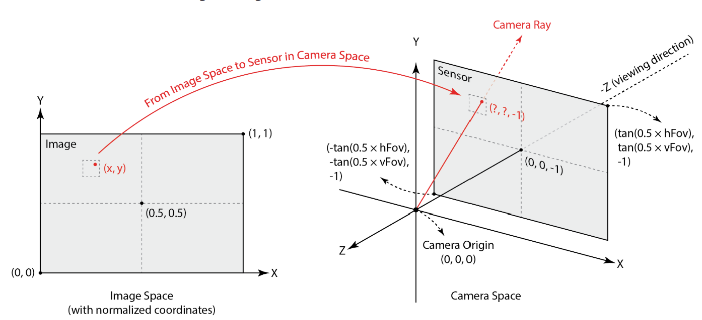
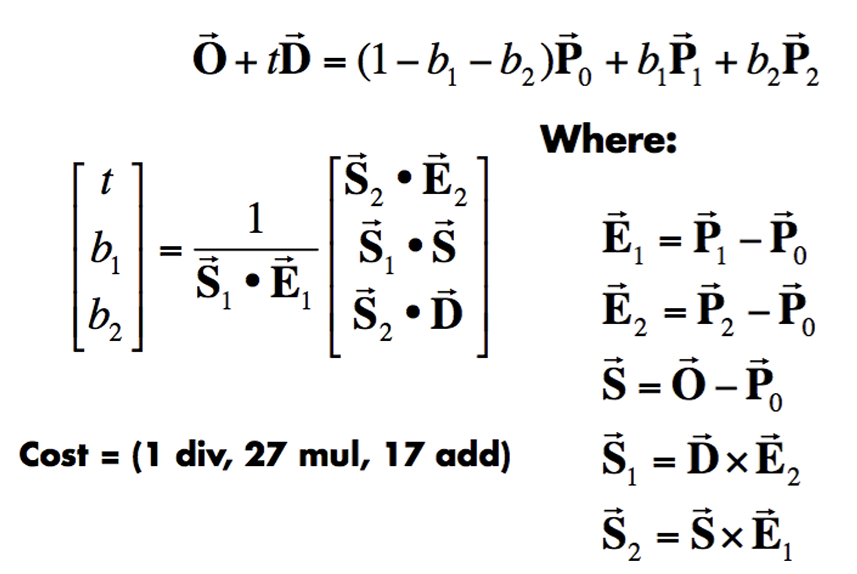
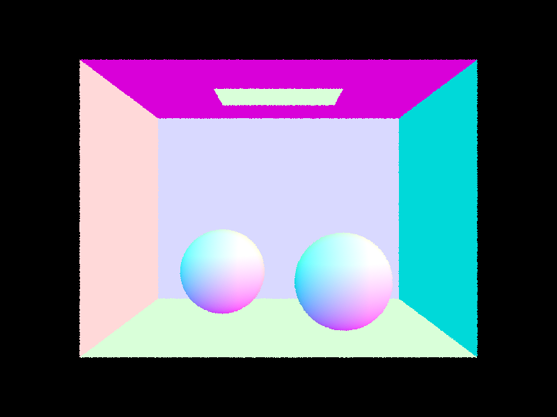
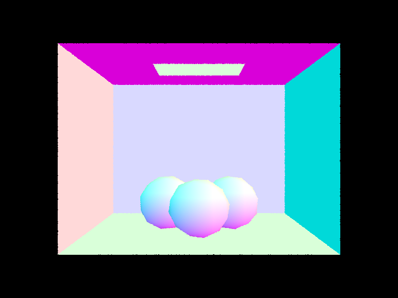
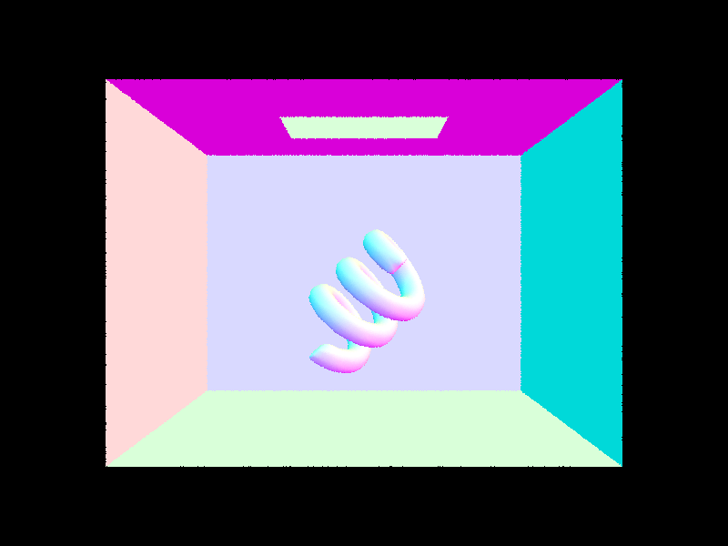

Link to webpage: (TODO) cs184.eecs.berkeley.edu/fa26
Link to GitHub repository: https://github.com/cal-cs184-student/hw3-i-m-already-pathtracer
One of the topics of homework 2 was providing shading effects to rendered surfaces with flat shading and then with Phong shading, the latter of which drastically improves the appearance of shadows on curved surfaces. In this homework, we're instead exploring an improved illumination model to simulate global illumination, using a physically-based renderer that implements a pathtracing algorithm. The idea is to trace a ray that originates from the camera viewpoint into various places in the scene, and the ray can reflect off of an object to imitate light reflection or scattering. In part 1, I implemented the very beginning of the rendering pipeline with three steps: pixel sample generation, ray generation, and then ray intersections with primitive shapes, triangles and spheres specifically.
We use pixel sample generation to estimate the integral of radiance over a given pixel, wherein we randomly select ns_aa samples within the pixel with a grid sampler that outputs values between 0 and 1. For each of the samples, we generate a ray traveling to its location and obtain its color, then calculate the pixel's overall color as an average of all of these colors.
To generate a ray that points from the camera to a point in the scene, we first have to consider the point in 2D image space as seen from the camera's perspective. This image space is normalized so that a point (x, y) inside it can take on values from (0, 0) to (1, 1), with the image space being centered at (0.5, 0.5). However, the camera space in 3D is centered at (0, 0, -1), and has a width of \( 2*tan(0.5*hFov) \) and a height of \( 2*tan(0.5*vFov) \). See the diagram below.

The ray generation function takes normalized image space coordinates as input, so these values must undergo a composite transformation to be put into camera space. The first transformation is a translation by (-0.5, -0.5), and the second transformation is scaling by \( (2*tan(0.5*hFov), 2*tan(0.5*vFov)) \). The ray begins at the origin, so its direction is determined by the vector that points to this new point at z=-1. Finally, we transform the ray's direction from camera to world space by multiplying it with the given "c2w" matrix, and normalize it. The ray is initialized with this direction and the given position in world space.
The general process for evaluating a ray-triangle intersection is to determine the point t at which the ray intersects the plane containing the triangle, if that t exists, and then to determine if the ray's intersection point is inside the triangle. I used the Möller Trumbore algorithm for determining if a ray and a triangle intersect, since this enabled me to easily simultaneously calculate the intersection "time" t and the barycentric coordinates of the intersection point. The picture below shows all of the necessary equations:

P0, P1, and P2 are the vertices of the triangle, which makes \( b3 = 1 - b1 - b2 \), b1, and b2 their respective barycentric coordinate coefficients. O and D are the ray's origin and direction. Once I calculated all these quantities, I first checked if the denominator term \( \vec{S_1} \cdot \vec{E_1} \) was equal to 0, since this case produces undefined results and means that the ray is parallel to and doesn't intersect the plane containing the triangle. Afterwards, I calculated t and the barycentric coordinates. If t is within the ray's accepted range and the barycentric coordinates are between 0 and 1, this indicates that the intersection point is indeed within the triangle. The intersection test function then returns true and stores the intersection data in the given struct, including t and n, which is the interpolated normal vector of the triangle's plane at the intersection point.
To determine the intersection between a sphere and a ray, I used the equations from lecture, which are derived from setting the vector equations for a ray and a sphere equal to each other and structuring it as a quadratic equation, with t as the variable. The constants are given as \( a = d \cdot d, \; \; b = 2(o - c) \cdot d, \; \; c = (o - c) \cdot (o - c) - R^2 \). Therefore, we can simply use the quadratic formula to solve for t. If the determinant in the quadratic is less than 0, t has no solutions and the ray doesn't intersect the sphere; if t has 1 solution, the ray is tangent to the sphere; if t has 2 solutions, the ray intersects the sphere at two points, and the closest intersection point is evaluated. Just as with the triangle, we evaluate the intersection point to determine if it's within the ray's range, and if so, the test function returns true and stores the intersection data, with the stored normal vector simply being the normalized ray from the sphere's center to the intersection point.
The below images show example renderings of various small .dae files.
|
 |
 |
 |